群头像 · 新一批设计
白色界面里，颜色集中在群头像。每套包含猫、羊、猴、狗、小鸡、蜥蜴、羊驼、兔、水獭和卡皮巴拉，保留表情与轮廓的差异。
动物只表示群。聊天用发送者姓名与时间；设备状态用数量与在线标记。
已选定 B · 独立群头像
透明背景每张头像独立导出，小动物只用于群，消息发送者以姓名识别。
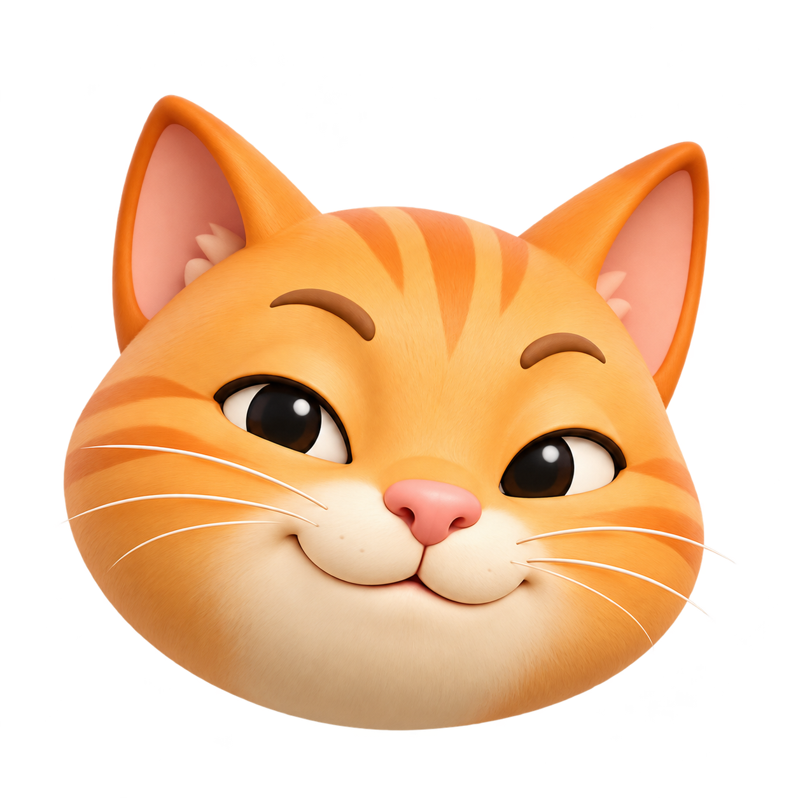
小猫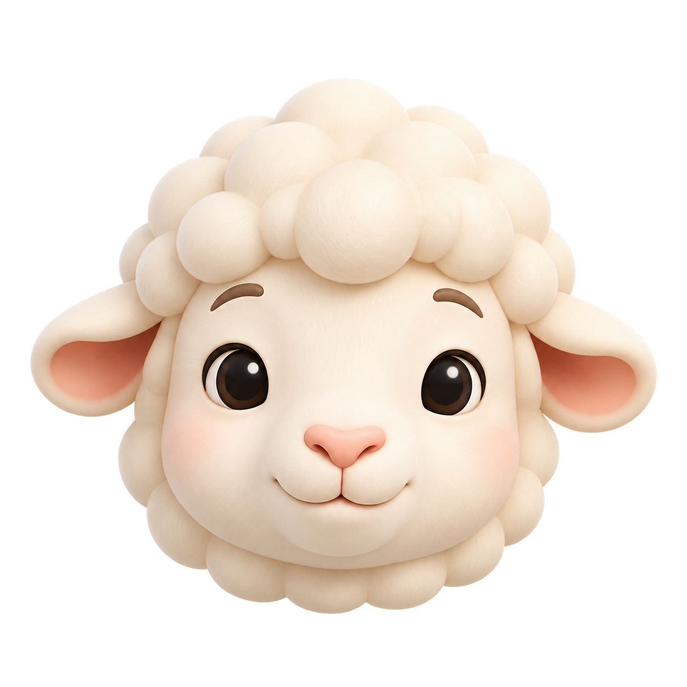
小羊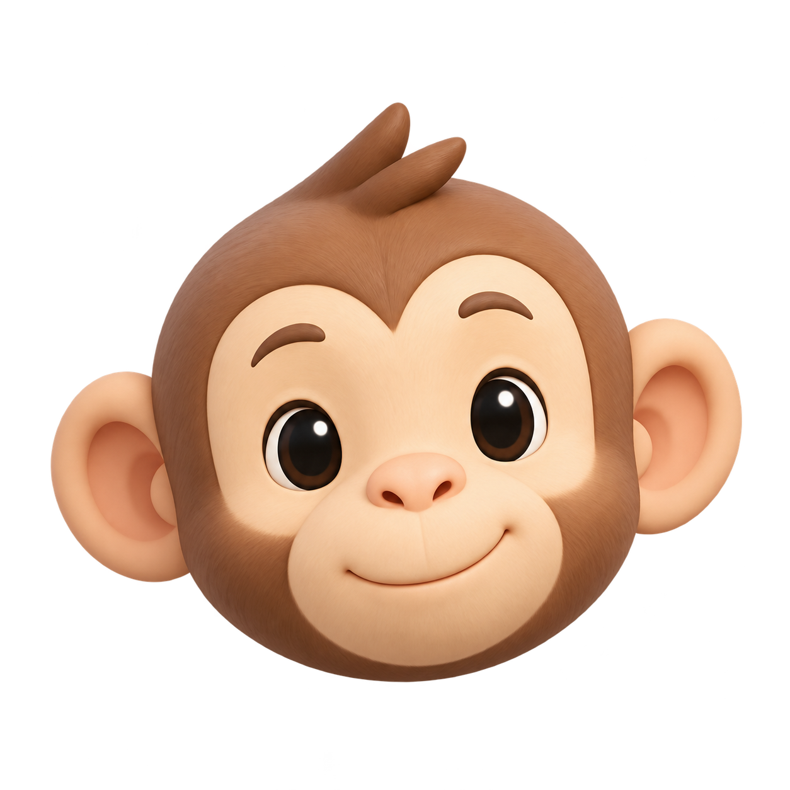
小猴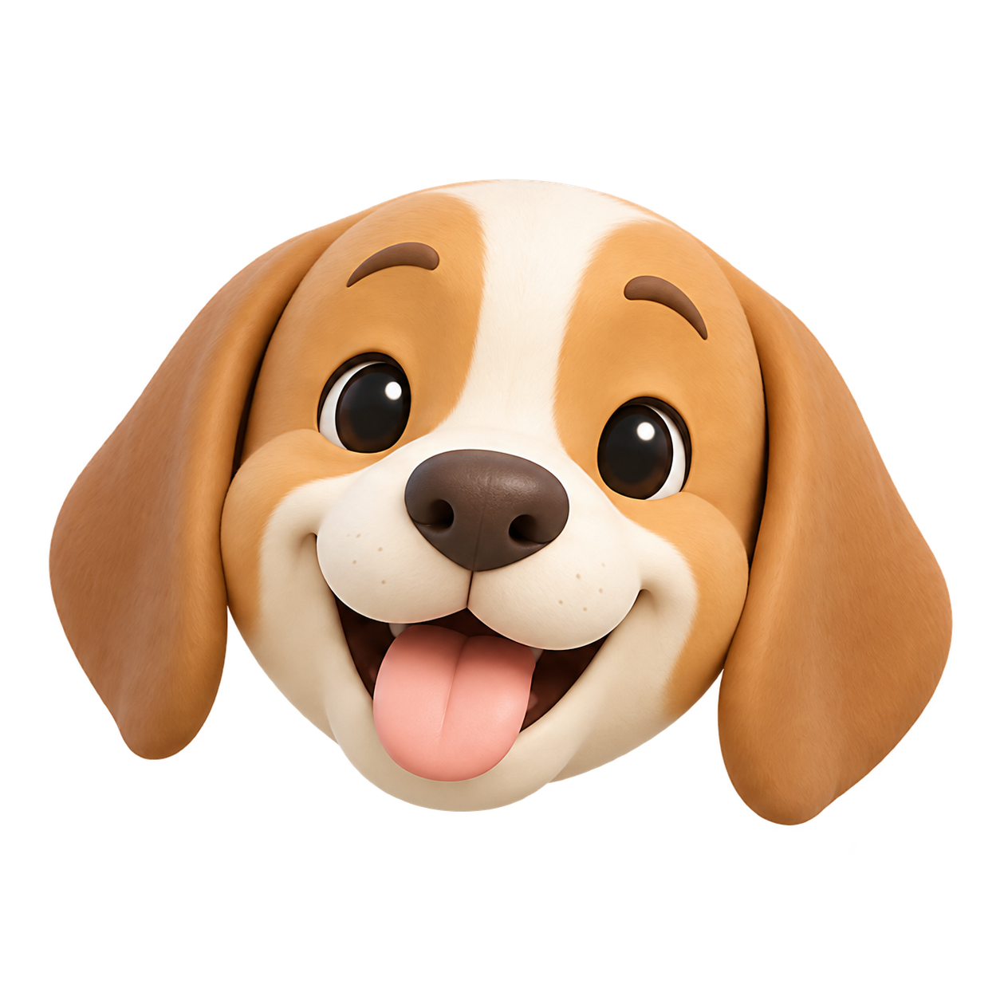
小狗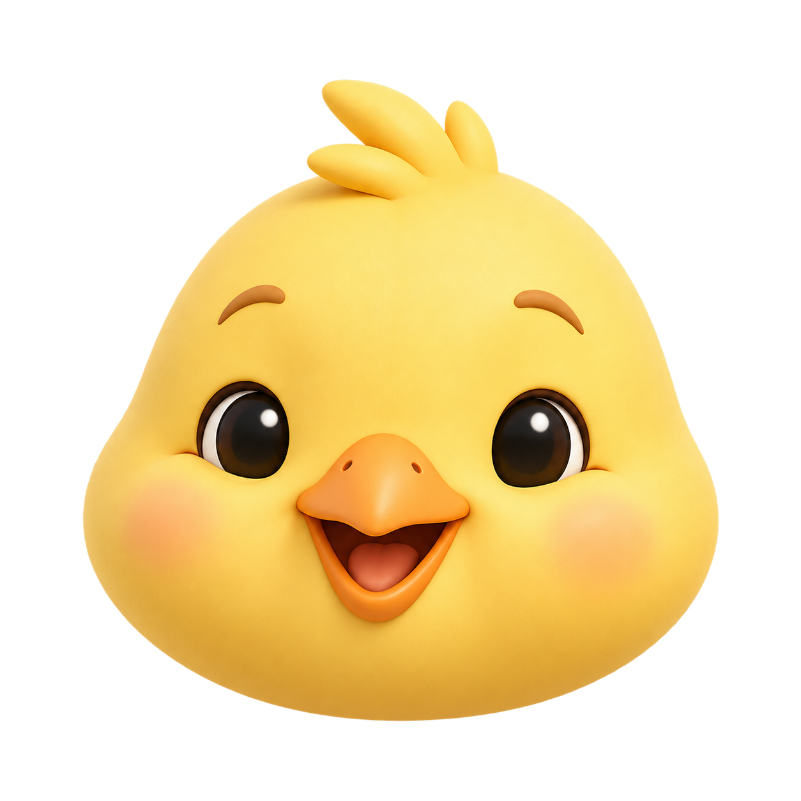
小鸡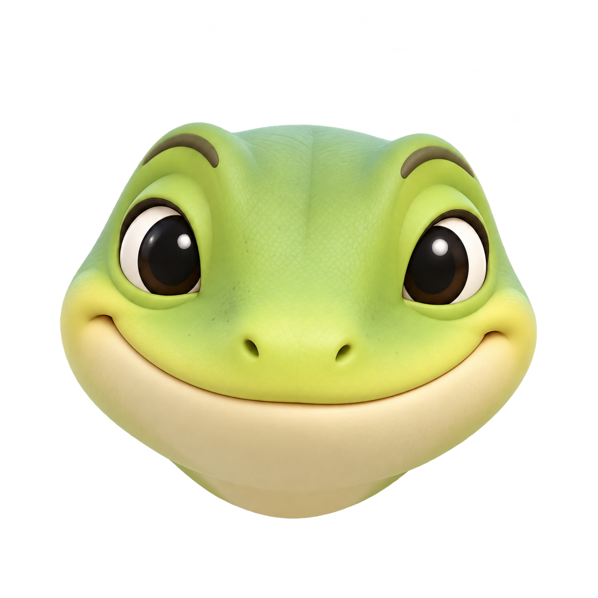
蜥蜴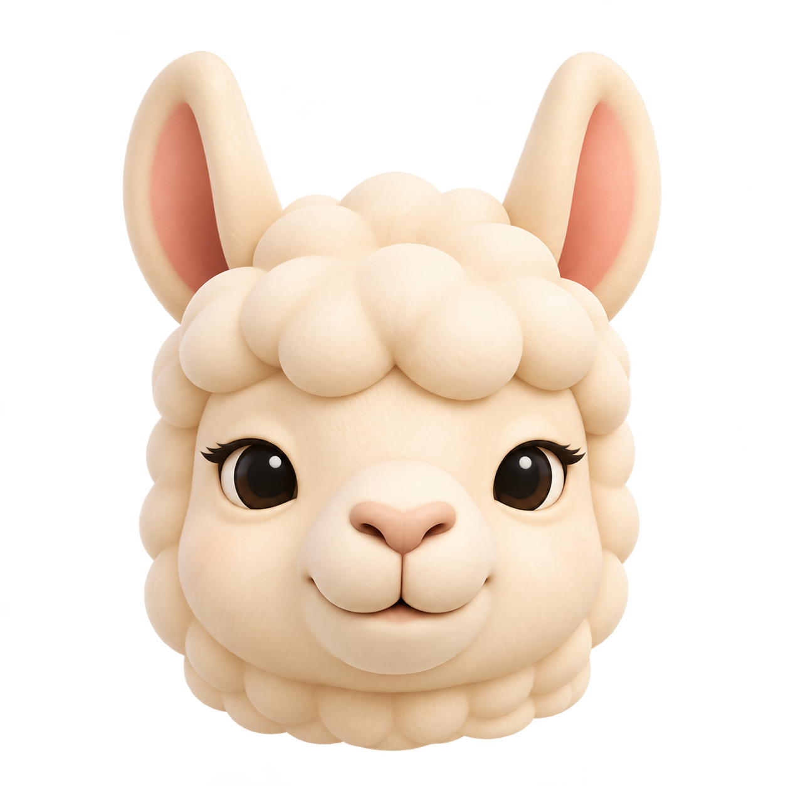
羊驼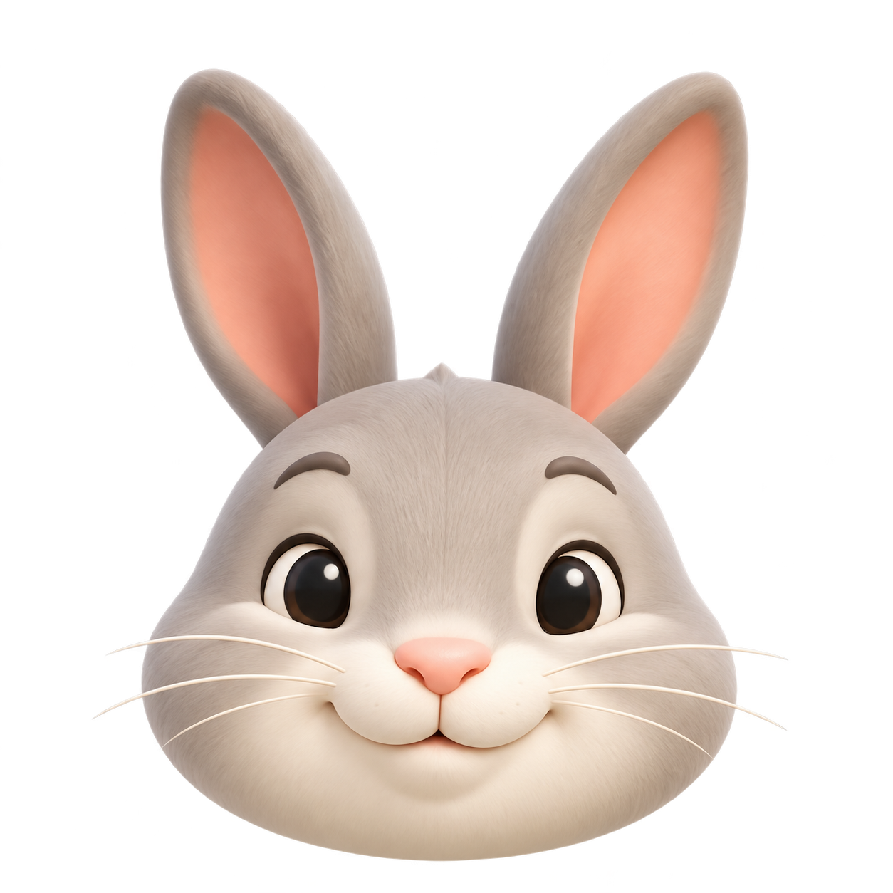
小兔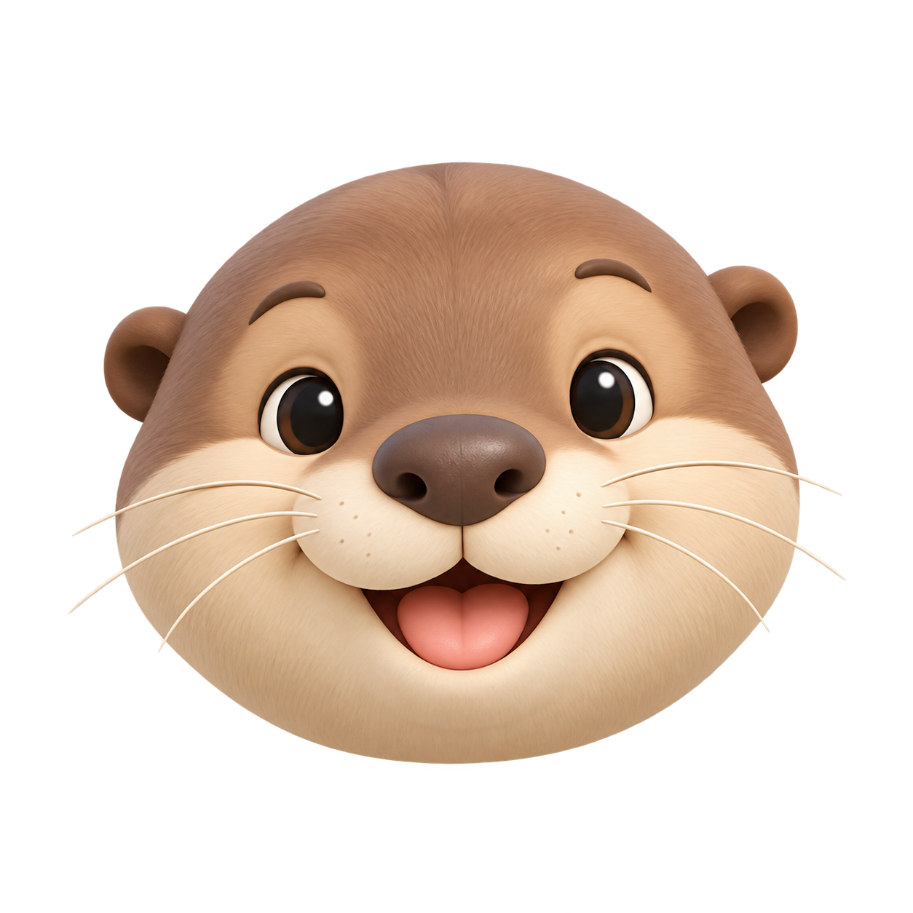
水獭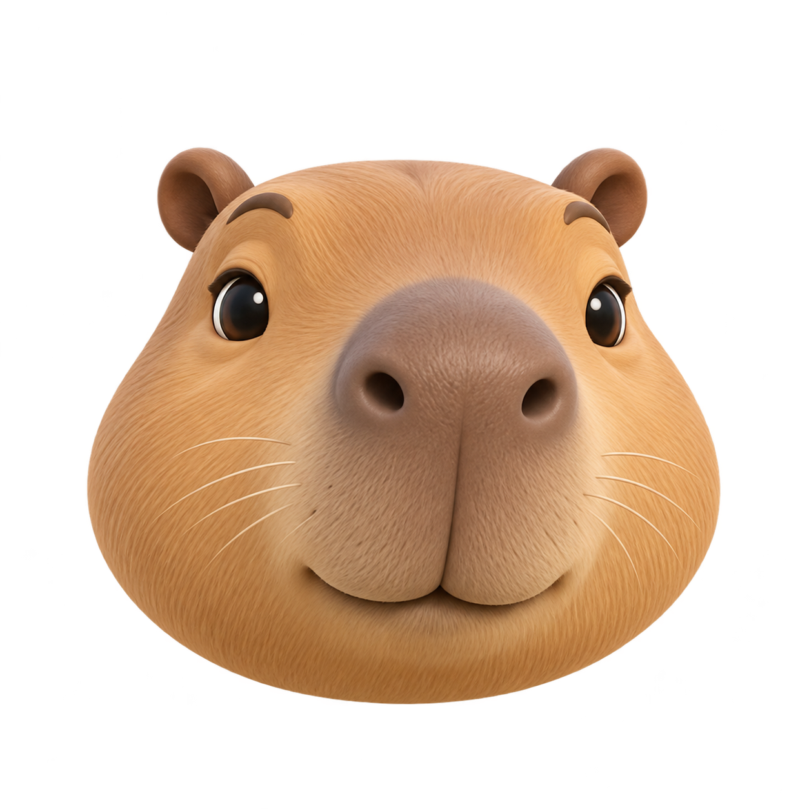
卡皮巴拉B · 圆润立体
优先建议轮廓干净、表情明确，颜色有层次。更适合 32–48px 的群列表、窗口标题和桌边图标。
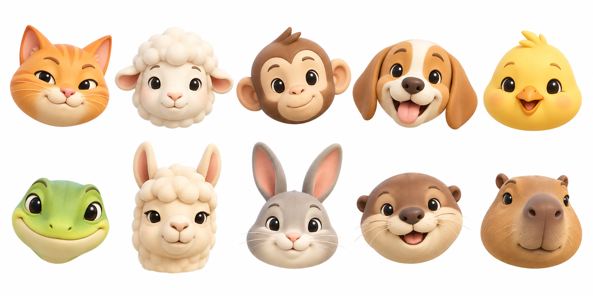